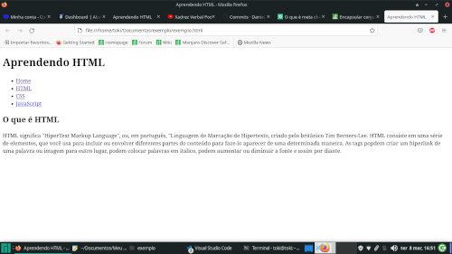

Aprendendo CSS
O que é CSS?
CSS é chamado de linguagem Cascading Style Sheet e é usado para estilizar elementos escritos em uma linguagem de marcação como HTML. O CSS separa o conteúdo da representação visual do site. Utilizando CSS é possível alterar a cor do texto de fundo, fonte e espaçamento entre paragrafos. Também é possivel criar tabelas, usar variações de layouts, ajustar imagens para suas respectivas telas e assim por diante.
Formatando o texto
Abrindo o projeto "exemplo" no Visual Studio Code, criar um arquivo chamado "style.css".

O site ainda está assim:
Abrindo o arquivo, ele estara vazio.
Voltando ao arquivo "exemplo.html", precisamos identificar a biblioteca em CSS, pra isso, é preciso linkar um arquivo ao outro. usando <link rel="Identificação" href="nome do arquivo.css">
Identificando a tag "body", o CSS passa todas as informações de layout pro site todo, logo, toda fonte do site será em Arial, sans serif, a cor do site em asul claro e a cor da fonte preto, conforme o exemplo:
Para trabalhar o menu, usamos o elemento "nav" identificando a id=menu, envolvendo a tag ul, para nomear no CSS.
Voltando ao arquivo CSS, nomeamos a tag "nav" seguida de uma hashtag (#) para nomear o id "menu".
A propriedade "display especifica o tipo de caixa de renderização usada por um elemento, "block" gera uma ou mais caixas de elemento de bloco.
Para editar a lista de menun, nomeamos a tag nav, o id menu e a tag ul, em "list-style", a opção none indica que o estilo da lista será nenhum, ou vazio.
Em "text-transform", a opção "uppercase" transforma todo o texto em maiusculo.

Para editar a lista em li, nomear a tag nav, o id menu e a tag li. Em display, a opção "inline-block" para que as divisẽs sejam na mesma linha, diferente do menu em colunas organizado pelo HTML.
A opção "background-color é para que os itens do menu tenham cores diferentes do body, auxiliando na identificação dos itens.
Continuando na linha 20 do código, ainda na tag li, usamos o "padding" para deifinir o tamanho do item, para 10 pixels, "margin" vai separar os itens, com uma distancia de 2 pixels e "transition" irá alterar a cor de fundo "background-color" após um segundo com o mouse em cima.
Na linha 24, o li vem com o elemento :hover, que é um seletor com o mouse passando sobre ele. Assim que passar, a cor de fundo altera como no exemplo:
Para dividir o conteúdo de forma mais clara, em menus laterais, artigo principal, etc, vamos nomear as partes usando identificadores, com a tag <div>. Na linha 11, foi criada uma div com a id="interface"
No arquivo CSS, identificar a nova div com o atributo, div#interface. Para dividir o espaço dessa nova interface, usar o atributo "width", no exemplo com 1000px (pixels).
Assim, o conteúdo selecionado para a div interface foi envolvido com a largura de 1000px.
Também foi criada uma tag chamada <section> com o id="corpo", para editar apenas o conteúdo interno da interface.
Voltando ao arquivo CSS, ainda na interface, usando background-color com uma cor diferente para separar dos menus, usando o sistema de cores hexadecimal #dac9e4 usando a hashtag no inicio, com a margin, calculamos em pixels as quatro margens em sentido horário (superior, direita, inferior, esquerda), e box-shadow descrito pelo deslocamento offset X e Y em relação ao elemento, utilizando o sistema rgba para gerar a cor da sombra e o raio (0, 0, 0, 0.2).
Na section#corpo ficarão os artigos da página, já pensando em conteúdo lado a lado, dividindo a interface em duas caixas de conteúdo. Com "display" em block faz com que o elemento HTML seja renderizado como bloco, tal como os parágrafos e os cabeçalhos são. O "width" irá delimitar o espaço de conteúdo em uma largura de 500px, "padding" me 15px distanciando o elemento da borda. A propriedade "border-right" vai criar uma borda apenas do lado direito, separando o conteúdo.
Essas foram as alterações até o momento:
Mais uma tag, agora a "header" com o id "cabeçalho", para definir o estilo especifico desse espaço, como na linha 12.
Com a propriedade "border-bottom", será criada uma borda inferior de 1px. "height" define a altura do cabeçalho em 150px, e "text-align" com "center", para centralizar o texto.
Esse é o resultado após as configurações:
Agora, a montagem dos menus laterais. De volta ao exemplo.html, na linha 23, foi usada a tag <aside>, com a id="esquerda". Como exemplo, inseri um <h2> e um <p> como exemplo de título e paragrafo.
No arquivo "style.css", na linha 56 vamos trabalhar a tag aside#esquerda com a propriedade "margin-left"em 550px.
Pronto, o texto ja aparece no conteúdo ao lado esquerdo da tela, porém, ele empurra o conteúdo da interface para baixo.
Utilizando a propriedade "position" em "absolute" que se posiciona acima do espaço do elemento "interface".
Também com a propriedade "width" em 400px, o conteúdo do aside não empurra a interface, e se posiciona de forma com que não avance a "caixa" do texto principal.
A mesma tag <aside> pode ser usada para o menu lateral direito, com a id="direita", conforme a linha 11. Abaixo dela um <h2> a titulo de exemplo e algumas <li> com o nome "item" para exemplificar o futuro menu.
Assim como o menu esquerdo, essa nova aside tbm "empurra" o restante do conteúdo abaixo.
Usando novamente a propriedade "position" "absolute" faz com que o conteúdo se encaixe acima dos elementos.
Porém, o conteúdo avançou para o campo de cabeçalho.
Com a propriedade "width" novamente, vamos delimitar o espaço dos elementos em 130px.
Agora, o conteúdo do futuro menu não invade os outros elementos, mas, por estética, vamos "descer" um pouco o menu para se alinhar com a interface.
Com a propriedade "background-color", podemos inserir uma cor diferente no menu, "color" muda apenas a cor da fonte do texto e a propriedade "margin" em "165px auto auto auto;" para alterar apenas a posição de inicio, como a figura abaixo:
Aqui o exemplo do menu ja alinhado com a interface.
Com a propriedade "box-shadow", configuramos uma espessura de 10px com 0.5 de transparencia em preto, para dar mais destaque ao menu. A propriedade padding, vai gerar um espaço de 15px entre os elementos.
Com quase tudo alinhado, sobram apenas os itens, que ainda estão fora da caixade menu.
Abrindo a tag "aside#direita" e com um espaço adicionando a tag <li>, podemos editar apenas o conteudo da tag, usando a propriedade "text-align" em "center".
Finalizando assim o layout do menu.